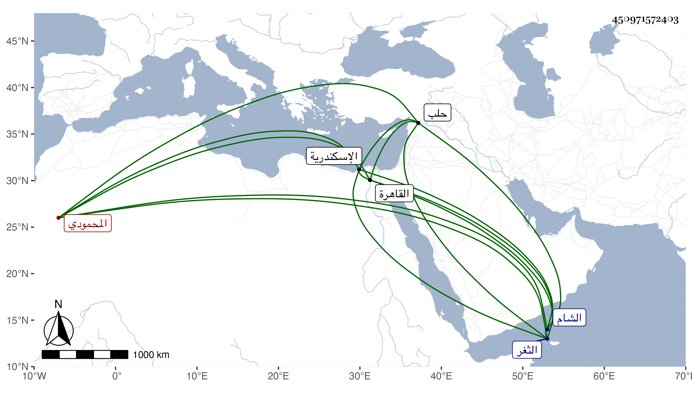

0902Sakhawi.DawLamic.ITO20230111-ara1.EIS1600.450971572403
Biography ID: 450971572403
أحمد بن شيخ بن عبد الله المظفر الشهاب أبو السعادات بن المؤيد المحمودي وأمه سعادات من أهل الشام . ولد في يوم الأحد ثاني جمادى الأولى سنة اثنتين وعشرين ، ولي السلطنة بعد أبيه في اليوم الذي دفن فيه أبوه من المحرم سنة أربع وعشرين وسنه حينئذ سنة وثمانية أشهر وبعض شهر ، ودخل حلب مع أمه لما تزوجها الطاهر ططر قبل أن يتسلطن ثم خلعه في شعبان منها . ومات بعد ذلك في سجن الاسكندرية هو وأخوه إبراهيم الصغير الماضي في الطاعون فكانت وفاة هذا في ليلة الخميس سلخ جمادى الثانية سنة ثلاث وثلاثين ودفنا بالثغر ثم نقلا بعد مدة إلى القاهرة فدفنا عند أبيهما بالقبة من الجامع المؤيدي وكان بعينه حول فاحش حصل عند سلطنته من دق الكوسات على حين غفلة فلاقوة إلا بالله . وقد ذكره شيخنا في أنبائه باختصار جدا والمقريزي في عقوده .
